Ветераны Белоярского округа
Белоярский округ - один из самых молодых округов Свердловской области. Он был образован в 1992 году. Но, несмотря на свою молодость, округ имеет богатую историю. Здесь жили и трудились многие замечательные люди, которые внесли большой вклад в развитие округа. Среди них - ветераны Великой Отечественной войны, труженики тыла, участники локальных конфликтов.
Ветераны Великой Отечественной войны
В годы Великой Отечественной войны на фронт ушли более 10 тысяч жителей Белоярского округа. Они воевали на всех фронтах, от Москвы до Берлина. Многие из них погибли, защищая Родину. Но те, кто вернулся домой, продолжали трудиться на благо округа. Но
Труженики тыла
В годы войны на плечи тружеников тыла легла не менее тяжелая задача, чем на плечи фронтовиков. Женщины, старики и дети работали на заводах, фабриках, в колхозах и совхозах. Они обеспечивали фронт всем необходимым - оружием, боеприпасами, продовольствием.
Участники локальных конфликтов
В послевоенные годы многие жители Белоярского округа принимали участие в локальных конфликтах. Они воевали в Афганистане, Чечне, Таджикистане и других горячих точках. Многие из них погибли, выполняя свой воинский долг.
Ветераны Белоярского округа - это люди, которые посвятили свою жизнь служению Родине. Они заслуживают нашего уважения и благодарности. Мы должны помнить их подвиги и всегда быть им благодарны.
Союз ветеранов локальных конфликтов Белоярского ГО
О НАС
В ноябре 2019 года, 8 человек из числа ветеранов Афганистана и Северного Кавказа, собрались за круглым столом и решили: "Союзу быть!" В этот же вечер была создана инициативная группа и поставлены задачи. А если задача есть и она ясна, будьте добры выполнять! Первой и самой основной задачей было поставлено воспитание молодежи в военно-патриотическом плане. И не на бумаге, для отчета, а на деле, чтобы показать остальным (кто не верит в молодежь), что можно и нужно работать в этом направлении. Результаты не заставили себя долго ждать, но это уже совсем другая история. Мы же не стали наслаждаться Победой, а двинулись с новой силой к новым вершинам. Не прекращая военно-патриотическую работу с юнармейцами ветераны решили заявить о себе. Заявить громко и четко, чтобы очнулись бойцы так привыкшие к "гражданке", чтобы увидели все: мы молоды душой, у нас полно сил, море энергии, огромное количество идей, и не просто идей, а идей необходимых всему нашему району. А самое главное - это огромное желание работать. Именно работать! РАБОТАТЬ ВО БЛАГО БУДУЩИХ ПОКОЛЕНИЙ! Но пандемия внесла свои коррективы. Работу с юнармией пришлось временно приостановить, но это не помешало провести празднование 75-летия Великой Победы, с соблюдением всех санитарных норм. Праздник получился ярким, красочным, торжественным! 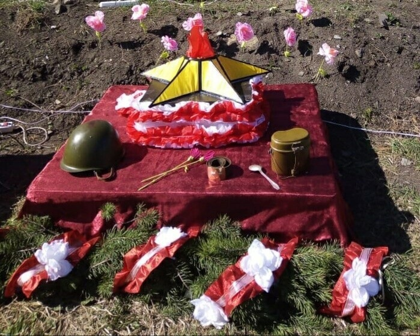Это не осталось незамеченным. Военный комиссар предоставил нам уникальную возможность побывать в качестве почетных гостей на Параде Победы в столице среднего Урала. Это событие не только перевернуло мышление ветеранов, они поверили в себя, поверили в свои силы, осознали свою необходимость, убедились в том, что все их старания, вся их работа видна и оценена руководством.
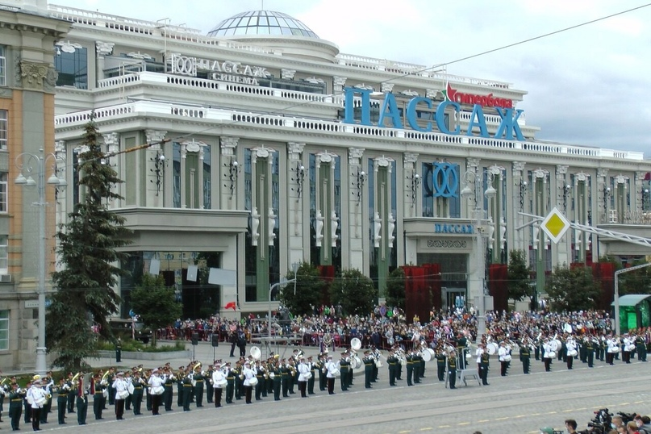 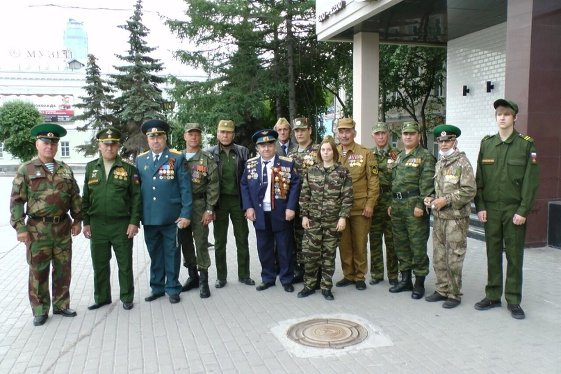 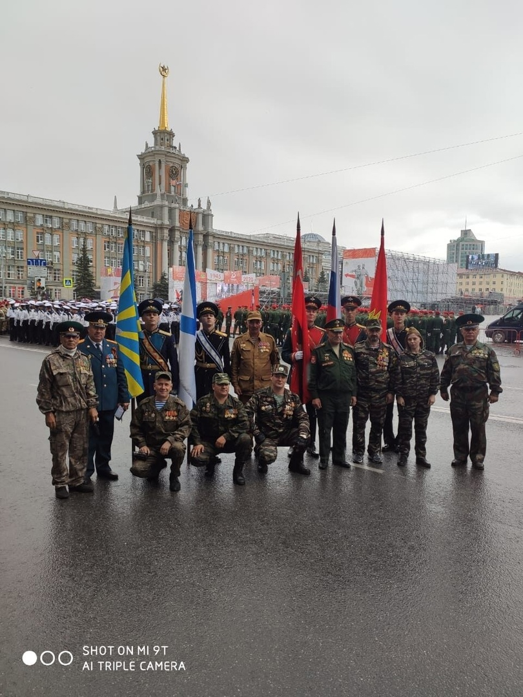

После этого значимого события, ряды недавно созданного Союза ветеранов локальных конфликтов пополнились бойцами-ветеранами, которые принесли с собой новые идеи и, как показало время, этим идеям суждено было сбыться и стать частью истории Союза ветеранов локальных конфликтов. Следующей задачей стояло проведение мероприятия «СВЕЧА ПАМЯТИ», посвященное началу Великой отечественной войны. Как и положено, началось мероприятие 22 июня, ровно в 4 часа. Казалось бы, кому хочется вставать в такую рань, да ещё и ехать кому за 10 км, кому за 15 км? Но ведь поехали! Не поленились! Это говорит о том, что у ветеранов появилось чувство долга, чувство товарищества и сплоченности.


 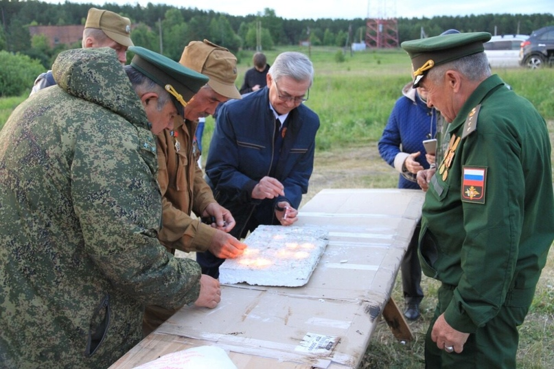
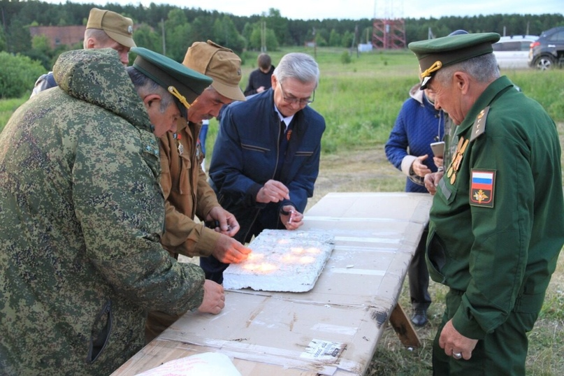

И тут появилась новая идея, не входившая в планы организации. То ли не выспались, то ли и правда «утро вечера мудренее», но возникла мысль поставить памятник, в память о всех участниках вооруженных конфликтов в стране и за рубежом после Победы 1945-го года. Решили установить боевую разведывательно-дозорную машину БРДМ—2. Сказано-сделано. Но одно дело сказать, совсем другое воплотить в жизнь. Мысль намертво отложилось в голове каждого. Лето короткое. Решили форсировать. Нашли машину (это тоже другая история), отреставрирована, нашлись спонсоры, настоящие патриоты своей Родины, которые не задумываясь помогали материалами. О них так же в другой рубрике. Работа шла параллельными курсами одновременно. Одни отвечали за постамент, другие за реставрацию, третьи за материалы. Потребовалось всего 40 дней! Через 40 дней памятник встал в строй, рядом с памятником воинам-афганцам и занял своё достойное место на аллее Славы поселка Белоярский!
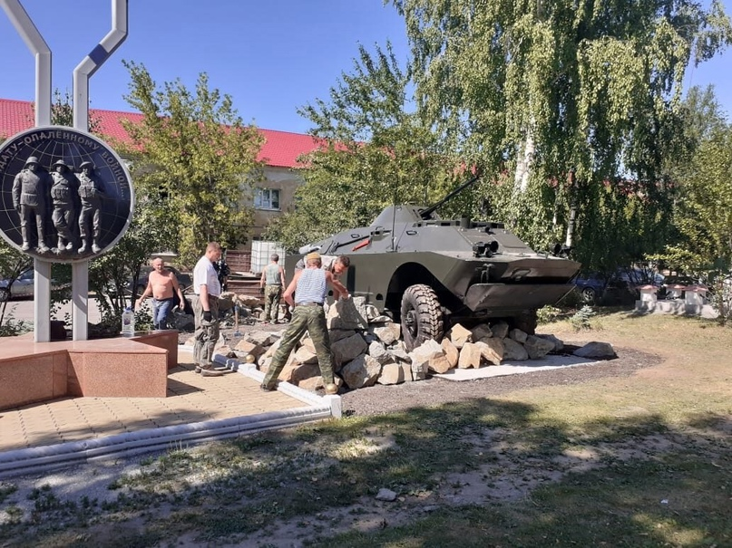


 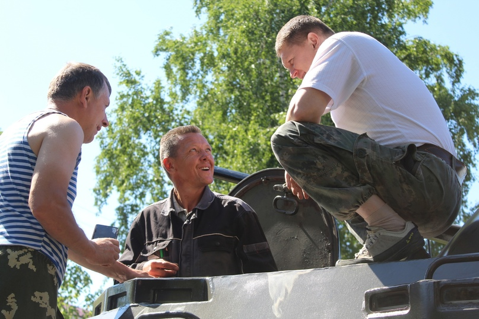
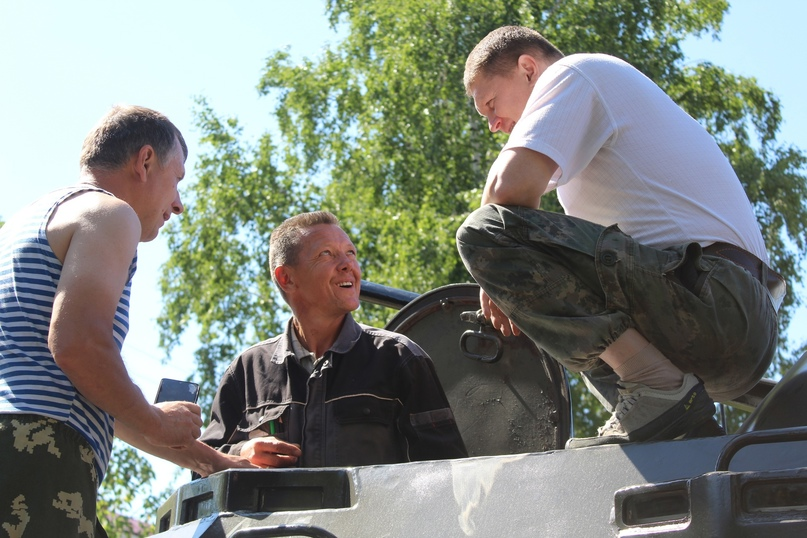
Открытие памятника—зто целое событие!Событие уже в масштабах района! На открытие приехали все неравнодушные. Приехали военачальники Центрального военного округа, казачество, генералы МВД. Это событие всколыхнуло не только ветеранов, сидящих в квартирах, но и руководителей Домов культуры, клубов, библиотек с предложениями о проведении тематических вечеров, внеклассных занятий, организации военно—спортивных игр, направленных на улучшение физической формы и патриотической направленности среди молодого населения. В июле был отмечен день ветеранов локальных войн. Не были забыты и женщины. Женам офицеров были вручены памятные награды. Был организован фуршет.
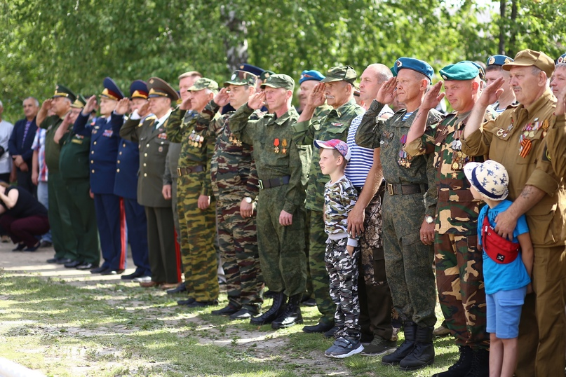 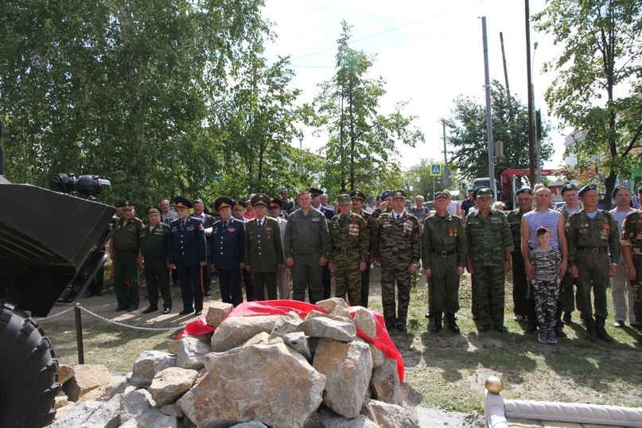